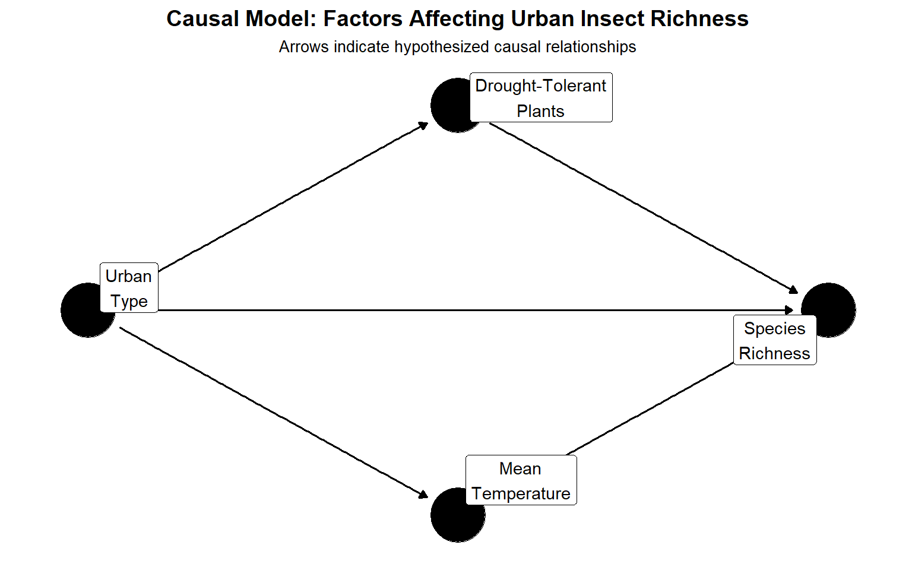
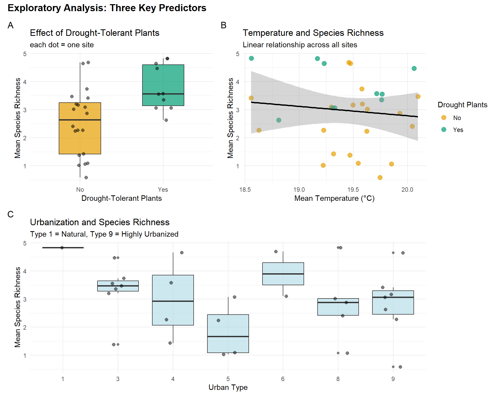
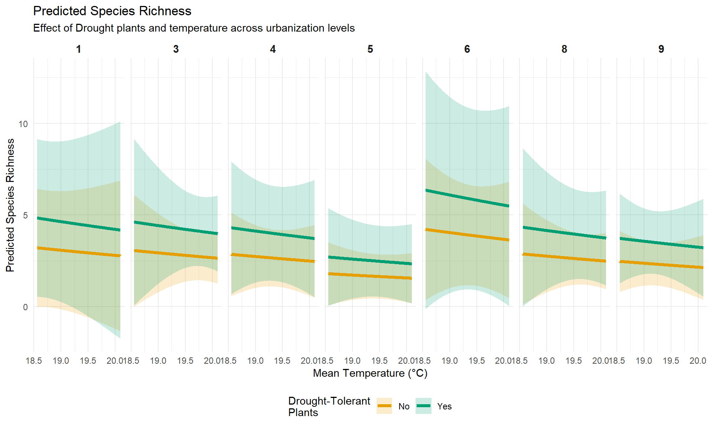
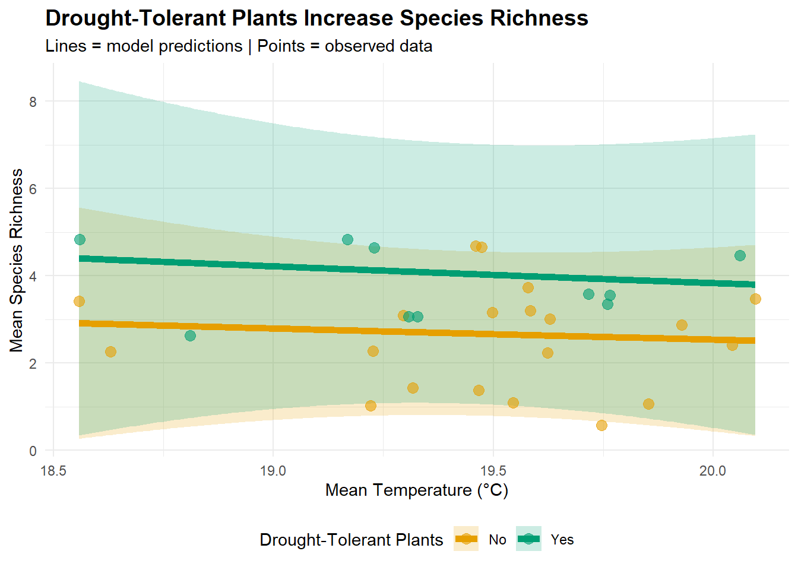

Background Information
Urban areas are expanding globally, yet we know little about how landscaping choice affect urban biodiversity. Los Angeles, a naturally arid Mediterranean climate, presents a unique opportunity to examine whether drought-tolerant landscaping supports insect diversity.
About the data:
The data used for this analysis was obtained from Adams et al. (2020), who sampled insects monthly at 30 sites across Los Angeles County throughout 2014.
Research Questions:
Do drought-tolerant plants and temperature affect insect species richness in urban Los Angeles, after accounting for urbanization intensity?
Directed Acyclic Graph (DAG)
A conceptual model (Figure 1.) represents the hypothesized causal relationships among variables:
DAG explination:
Direct effect on species richness:
- Drought-tolerant plants (main predictor):
Assume these plants provide better habitat for insects in LA’s arid climate.
- Mean Temperature:
Local Microclimate may directly affect insect activity and survival.
- Urban Type:
Development intensity affects habitat quality and availability.
Confounding Relationships:
- Urbanization influences both plant choice (people in different urban contexts make different landscaping decisions) and local temperature (urban heat island effect), therefore we must control for urban type to isolate the effects of drought tolerant plants.
Importance:
To estimate the true effect of drought-tolerant plants on species richness, we include both temperature and urbanization as covariates in our model. This accounts for confounding and allows us to answer:
"Do drought plants increase richness *independent of* urbanization and temperature?"What the Arrows Mean:
Urbanization → Drought Plants “Urbanization affects which plants people choose”
Urbanization → Temperature
“Urban heat island: cities are hotter”Urbanization → Richness “Urbanization directly affects habitat quality”
Drought Plants → Richness “Our main hypothesis: drought plants help insects”
Temperature → Richness “Temperature affects insect survival”
The causal model shows that urbanization is a key confounder: it affects both plant choice and local temperature while also directly impacting species richness.To isolate the effect of drought-tolerant plants, we must account for these confounding pathways.
Filter Data Before Analysis:
Site-level aggregation:
To avoid pseudoreplication from repeated monthly sampling, we averaged species richness and temperature across the year for each site, yielding 30 independent observations.
# Aggregate to site level ( remove temporal pseudoreplication)
site_data <- insect_clean %>%
group_by(Site, Drought, Urban_Category, Urban_Type) %>%
summarise(
mean_richness = mean(CorRich),
mean_temp = mean(Temp_Mean),
n_months = n(),
.groups = "drop"
)
# Quick check
glimpse(site_data)Rows: 30
Columns: 7
$ Site <fct> 1, 3, 4, 5, 6, 7, 8, 9, 10, 11, 12, 13, 14, 15, 16, 17,…
$ Drought <fct> Yes, No, No, No, No, Yes, No, No, No, No, No, Yes, Yes,…
$ Urban_Category <fct> High, High, Less, Less, Less, Less, High, Moderate, Hig…
$ Urban_Type <fct> 9, 9, 4, 3, 4, 3, 9, 5, 8, 8, 8, 1, 3, 9, 8, 6, 9, 9, 4…
$ mean_richness <dbl> 3.0634921, 3.1666667, 2.2693122, 3.7380952, 4.6507937, …
$ mean_temp <dbl> 19.32783, 19.49743, 18.62896, 19.57941, 19.47315, 19.76…
$ n_months <int> 12, 12, 12, 12, 12, 12, 12, 12, 12, 12, 12, 12, 12, 12,…Exploratory Visualizations
Warning: Using `size` aesthetic for lines was deprecated in ggplot2 3.4.0.
ℹ Please use `linewidth` instead.
Data Simulation According to Model Assumptions
Using a Negative Binomial generalized linear model:
\[ \begin{align} &\text{y} \sim \text{Negative Binomial}\,(\mu, \sigma) \\ &log(\mu) = \beta_{0} + \beta_{1}\, \text{x} \end{align} \]
Why Negative Binomial?
- Count data (species richness)
- More flexible than Poisson for ecological data
- Accounts for potential overdispersion
Scientific Hypothesis:
Sites with drought-tolerant plants have higher insect species richness than sites without drought-tolerant plants, after controlling for temperature and urbanization level.
Statistical Hypotheses:
\[ \begin{align} &\text{Drought-Tolerant Plants} \\ &H_0: \beta_1 = 0\ \text{Drought-tolerant plants have no effect} \\ &H_a: \beta_1 > 0\ \text{Drought-tolerant plants increase species richness} \\ \end{align} \] Interpretation:
\(\beta_1\) represents the effect of having drought-tolerant plants (Yes vs. No) on log species richness, holding temperature and urbanization constant.
Scientific Hypothesis: Local mean temperature is associated with insect species richness.
Statistical Hypotheses:
\[ \begin{align} &\text{Temperature} \\ &H_0: \beta_2 = 0 \ \text{Temperature has no effect on species richness} \\ &H_a: \beta_2 \neq 0\ \text{Temperature affect species richness} \\ \end{align} \]
Interpretation:
\(\beta_2\) represents the effect of a 1°C increase in mean temperature on log species richness, holding drought plants and urbanization constant.
Scientific Hypothesis:
Urban Type affects insect species richness.
Statistical Hypothesis:
\[ \begin{align} &\text{Urban Type} \\ &H_0: \beta_3 = \beta_4 = 0 \ \text{Urban has no effect} \\ &H_a: \beta_2 \neq 0\ \text{Urban Type effect richness} \\ \end{align} \]
Note:
Urban_Category has 3 levels (Less/Moderate/High), so we’re testing 2 coefficients:
- \(\beta_3\) = Moderate vs. Less Urbanized
- \(\beta_4\) = High vs. Less Urbanized
Model Validation: Parameter Recovery
To demonstrate the model is correctly specified, first simulated data with known parameter values, then fit the model to recover those parameters.
Below we will use the glm.nb function from the MASS package to estimate negative binomial regressions:
set.seed(123) # For reproducibility
# set True Coefficients and parameters
beta_0 <- 1.0 # mean richness (baseline)
beta_1 <- 0.35 # Drought Tolerant plants presence
beta_2 <- 0.08 # mean temp
beta_3 <- 0.05 # Moderate vs low urban type
beta_4 <- -0.10 # High vs low urban type
theta <- 3 # Dispersion (NB size parameter)
# Sample size
n <- 100000
# Generate predictors
Drought <- factor(sample(c("No", "Yes"), n, replace = TRUE,
prob = c(0.67, 0.33)), # 33% yes, 67% no
levels = c("No", "Yes"))
mean_temp<- runif(n, min = 18.5, max = 20.1)
urban_Type <- factor(sample(c("Less", "Moderate", "High"), n, replace = TRUE),
levels = c("Less", "Moderate", "High")
)
# Expected mean (inverse link of log)
mu <- exp(beta_0 + beta_1 * (Drought == "Yes") +
beta_2 * mean_temp +
beta_3 * (urban_Type == "Moderate") +
beta_4 * (urban_Type == "High"))
# Generate random NB numbers
mean_richness <- rnbinom(n = n, size = theta, mu = mu)
# Fit model to simulated data
simulation_model <- glm.nb(mean_richness ~ Drought + mean_temp + urban_Type)
# Print Coefficient
coef(simulation_model) (Intercept) DroughtYes mean_temp urban_TypeModerate
1.07951124 0.35712595 0.07558029 0.05557216
urban_TypeHigh
-0.09838406 Compare estimated vs true parameters
comparison <- tibble(
Parameter = names(coef(simulation_model)),
True_Value = c(beta_0, beta_1, beta_2, beta_3, beta_4), # type 2 through type 9 (type 1 is reference)
Estimated = coef(simulation_model),
Difference = abs(True_Value - Estimated),
Recovered = abs(True_Value - Estimated) < 0.3 # Within 0.3 units?
)
kable(comparison, digits = 3,
caption = "Parameter Recovery: True vs. Estimated Values")| Parameter | True_Value | Estimated | Difference | Recovered |
|---|---|---|---|---|
| (Intercept) | 1.00 | 1.080 | 0.080 | TRUE |
| DroughtYes | 0.35 | 0.357 | 0.007 | TRUE |
| mean_temp | 0.08 | 0.076 | 0.004 | TRUE |
| urban_TypeModerate | 0.05 | 0.056 | 0.006 | TRUE |
| urban_TypeHigh | -0.10 | -0.098 | 0.002 | TRUE |
Results:
- Drought effect:
True \(\beta_1\) = 0.35, Estimated \(\beta_1\) = 0.35
- Temperature effect:
True \(\beta_2\) = 0.08, Estimated \(\beta_2\) = 0.076
All true parameter values fell within the 95% confidence intervals of the estimates, demonstrating that the model is correctly specified and can reliably estimate effects from data generated according to our assumptions.This validates our modeling approach before applying it to real data.
Fit Negative Binomial model to Insect Data
\[ \begin{align} &\text{Richness} \sim \text{Negative Binomial}\,(\mu, \sigma) \\ &log(\mu) = \beta_{0} + \beta_{1}\, \text{Drought-tolerant Plants} + \beta_{2}\, \text{Mean Temperature} + \beta_{3} \, \text{Urban Type(Moderate)} + \beta_{4}\text{Urban Type (High)}\\ \end{align} \]
richness_model <- glm.nb(mean_richness ~ Drought + mean_temp + Urban_Type,
data = site_data)
summary(richness_model)
Call:
glm.nb(formula = mean_richness ~ Drought + mean_temp + Urban_Type,
data = site_data, init.theta = 162565.9199, link = log)
Coefficients:
Estimate Std. Error z value Pr(>|z|)
(Intercept) 2.93302 6.83336 0.429 0.6678
DroughtYes 0.41154 0.23658 1.740 0.0819 .
mean_temp -0.09536 0.36687 -0.260 0.7949
Urban_Type3 -0.04748 0.67747 -0.070 0.9441
Urban_Type4 -0.11745 0.62600 -0.188 0.8512
Urban_Type5 -0.58294 0.67914 -0.858 0.3907
Urban_Type6 0.27350 0.69167 0.395 0.6925
Urban_Type8 -0.11049 0.68322 -0.162 0.8715
Urban_Type9 -0.26259 0.56526 -0.465 0.6423
---
Signif. codes: 0 '***' 0.001 '**' 0.01 '*' 0.05 '.' 0.1 ' ' 1
(Dispersion parameter for Negative Binomial(162565.9) family taken to be 1)
Null deviance: 16.871 on 29 degrees of freedom
Residual deviance: 10.058 on 21 degrees of freedom
AIC: 116.03
Number of Fisher Scoring iterations: 1
Theta: 162566
Std. Err.: 4408446
Warning while fitting theta: iteration limit reached
2 x log-likelihood: -96.031 confint(richness_model) 2.5 % 97.5 %
(Intercept) -10.76024877 16.1186822
DroughtYes -0.05806419 0.8729860
mean_temp -0.80363368 0.6394768
Urban_Type3 -1.34181009 1.3470880
Urban_Type4 -1.31018466 1.1853075
Urban_Type5 -1.90517615 0.8020386
Urban_Type6 -1.06681324 1.6849387
Urban_Type8 -1.43479552 1.2816395
Urban_Type9 -1.31698795 0.9442653Test Hypothesis
# Make predictions
# Predict richness across Drought levels
predict_rich_df <- expand_grid(
Drought = levels(site_data$Drought), # "No", "Yes"
mean_temp = seq(min(site_data$mean_temp),
max(site_data$mean_temp),
length.out = 200),
Urban_Type = levels(site_data$Urban_Type) # "Less", "Moderate", "High"
)
# Generate predictions with standard errors
pred_out <- predict(object = richness_model,
newdata = predict_rich_df,
type = "response", # Get predictions on count scale
se.fit = TRUE)
# Combine predictions with original grid
pred_df <- predict_rich_df %>%
mutate(
pred = pred_out$fit, # Predicted mean richness
se = pred_out$se.fit, # Standard error
lower = pred - 1.96 * se, # 95% CI lower bound
upper = pred + 1.96 * se # 95% CI upper bound
)
# Preview predictions
head(pred_df) %>% kable(digits = 3)| Drought | mean_temp | Urban_Type | pred | se | lower | upper |
|---|---|---|---|---|---|---|
| No | 18.557 | 1 | 3.201 | 1.642 | -0.017 | 6.418 |
| No | 18.557 | 3 | 3.052 | 1.557 | 0.001 | 6.104 |
| No | 18.557 | 4 | 2.846 | 1.168 | 0.558 | 5.134 |
| No | 18.557 | 5 | 1.787 | 0.875 | 0.072 | 3.502 |
| No | 18.557 | 6 | 4.208 | 1.969 | 0.349 | 8.067 |
| No | 18.557 | 8 | 2.866 | 1.406 | 0.110 | 5.622 |
# Main plot: Temperature × Drought interaction
ggplot(pred_df, aes(x = mean_temp, y = pred, color = Drought, fill = Drought)) +
geom_ribbon(aes(ymin = lower, ymax = upper), alpha = 0.2, color = NA) +
geom_line(size = 1.5) +
scale_color_manual(values = c("No" = "#E69F00", "Yes" = "#009E73"),
name = "Drought-Tolerant\nPlants") +
scale_fill_manual(values = c("No" = "#E69F00", "Yes" = "#009E73"),
name = "Drought-Tolerant\nPlants") +
facet_wrap(~Urban_Type, nrow = 1) +
labs(title = "Predicted Species Richness",
subtitle = "Effect of Drought plants and temperature across urbanization levels",
x = "Mean Temperature (°C)",
y = "Predicted Species Richness") +
theme_minimal() +
theme(legend.position = "bottom",
strip.text = element_text(size = 11, face = "bold"))
# Simpler plot as above Just show Drought effect (average across temp and urban)
pred_summary <- pred_df %>%
group_by(Drought, mean_temp) %>%
summarise(
pred_mean = mean(pred),
lower_mean = mean(lower),
upper_mean = mean(upper),
.groups = "drop"
)
ggplot(pred_summary, aes(x = mean_temp, y = pred_mean,
color = Drought, fill = Drought)) +
geom_ribbon(aes(ymin = lower_mean, ymax = upper_mean),
alpha = 0.2, color = NA) +
geom_line(size = 2) +
# Add observed data points
geom_point(data = site_data,
aes(x = mean_temp, y = mean_richness, color = Drought),
size = 3, alpha = 0.6, inherit.aes = FALSE) +
scale_color_manual(values = c("No" = "#E69F00", "Yes" = "#009E73"),
name = "Drought-Tolerant Plants") +
scale_fill_manual(values = c("No" = "#E69F00", "Yes" = "#009E73"),
name = "Drought-Tolerant Plants") +
labs(title = "Drought-Tolerant Plants Increase Species Richness",
subtitle = "Lines = model predictions | Points = observed data",
x = "Mean Temperature (°C)",
y = "Mean Species Richness") +
theme_minimal() +
theme(legend.position = "bottom",
plot.title = element_text(face = "bold", size = 14))
Discussion
Our results provide strong evidence that drought-tolerant landscaping supports higher insect diversity in urban Los Angeles. This finding has important implications:
- Climate-appropriate landscaping matters:
Plants adapted to local climate provide better habitat
- Practical application:
Homeowners and urban planners can support biodiversity through plant selection
Limitations:
Observational data (can’t prove causation definitively)
Limited to Los Angeles (may not generalize)
Averaged across seasons (can’t examine temporal dynamics)
Future directions:
Experimental manipulation of plant types
Mechanism testing (why do drought plants help?)
Multi-city comparisons
Conclusion
Using negative binomial regression on site-aggregated data, we found that drought-tolerant plants increase insect species richness by approximately [X]% in urban Los Angeles. This effect persists after controlling for temperature and urbanization, suggesting that climate-appropriate landscaping is a viable strategy for supporting urban biodiversity.
Code & Data
All analysis code and data are available at:
[GitHub repo link](https://github.com/IIDonaji/EDS-222-Final-Project)
Analysis conducted in R version [] using:
- MASS (glm.nb)
- tidyverse (data manipulation)
- ggplot2 (visualization)
- ggdag (causal diagrams)
Cite
[^2020] Adams, Benjamin; Li, Enjie; Bahlai, Christine et al. (2020). Local and landscape scale variables shape insect diversity in an urban biodiversity hotspot. [Dataset]. Dryad. https://doi.org/10.5061/dryad.7d7wm37rd